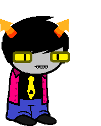

Knight of Space
Full name: Litl_E Postiv
Trolltag/Chumhandle: theLegolink
Quirk: >Th_E quick brown fox jump_Ed ov_Er th_E lazy dog.<
Associated Colour: #ffff00
Session: Trollplay
Dancestor: WorldSaver
Modus: Inventory Modus
(Nothing too fancy. Can only hold up to 10 cards at the beginning, then gains more slots the higher he is on the Echeladder.)
Strife Specibus: Swordkind
Server: Osamco
Client: Osamco
Matesprit: N/A
Kismisis: N/A
Morail: Osamco
Auspistice: N/A
Land:
Your land is the LAND OF SHAPES AND FROGS. From a distance, it looks like a BALL full of HOLES in random GEOMETRICAL SHAPES, but a closer inspection would reveal it's exactly that. Most HOLES have a variety of similar shapes, seemingly the size of the HOLE they correspond to, but in reality you must bend space and time to put the shapes in the holes, within a given time limit. To access the FROGS needed for breeding, you have to locate unnecessary HOLES, and solve the puzzles by sticking the right shapes into them, occasionally bending space and time to do so, to reveal the FROGS inside. They may or may not be dead, and due to SCHRODINGER'S LAW OR WHATEVER, you cannot breed them until they are freed.
Notes 1:
- Is omniscient.
- Favourite animal is a cat.
- Is incapable of sensing Osamco normaly.
- Was originally the Shroud of mind, before future Osamco changed their Classpects to make the game winnable.
Notes 2:
- Can't see Osamco.
- Can't hear Osamco.
- Indirectly senses Osamco.